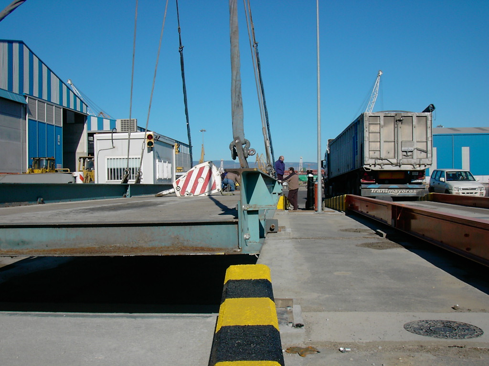
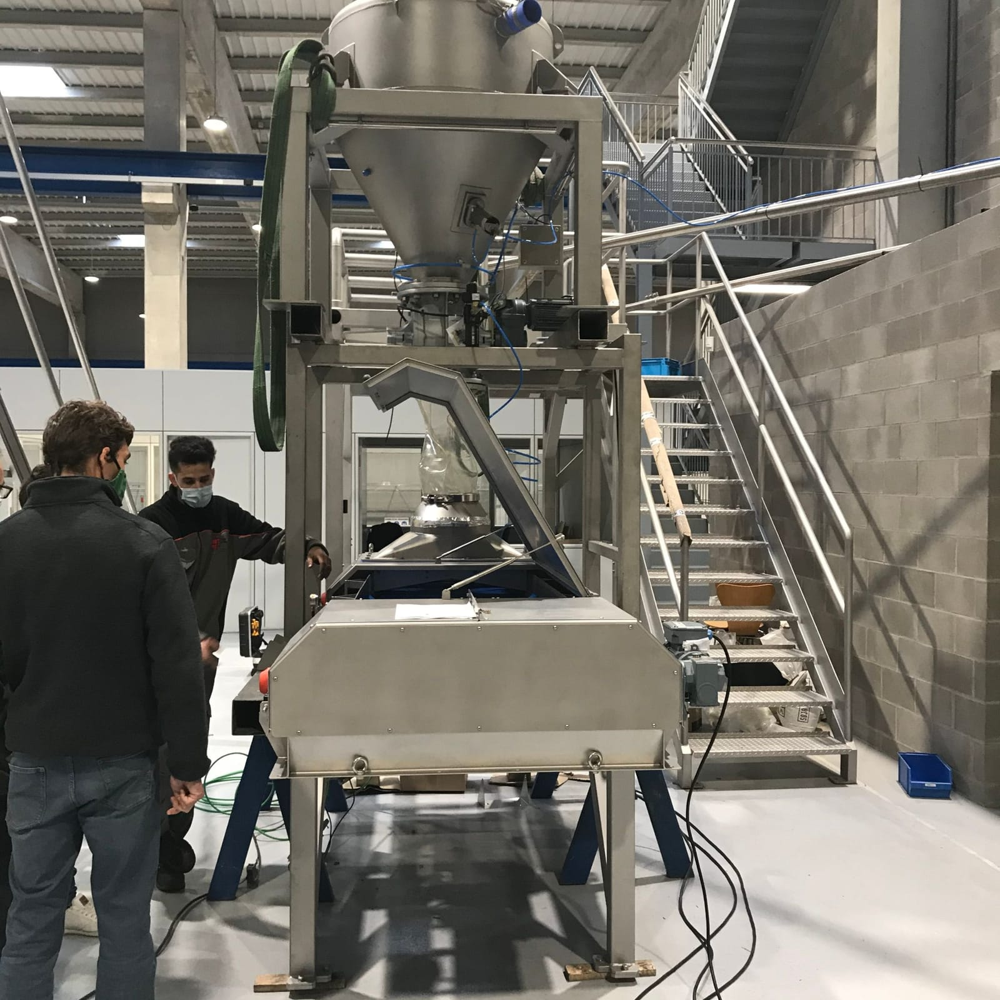
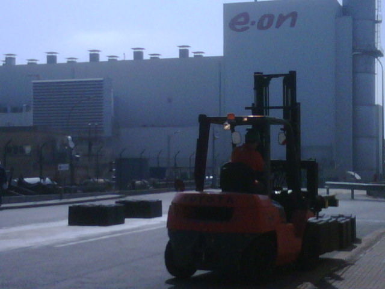
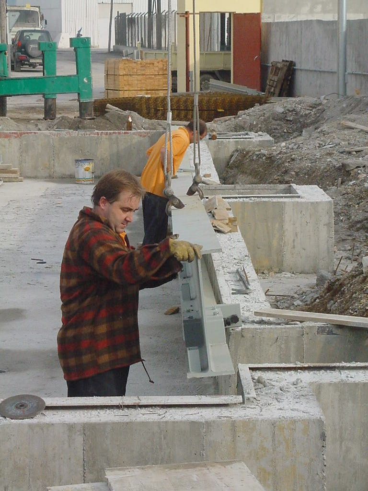
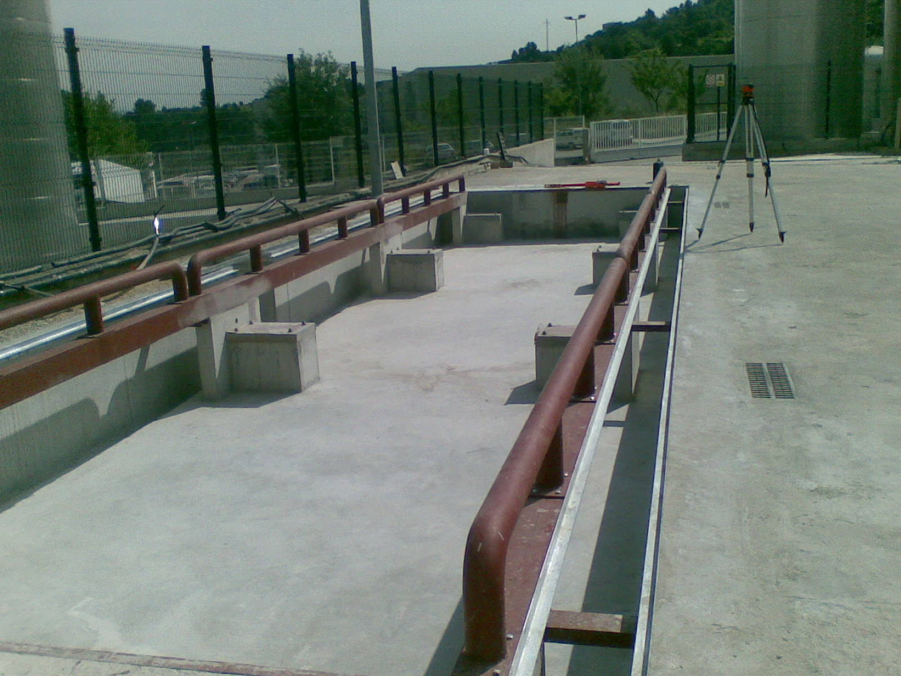
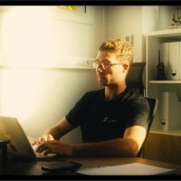
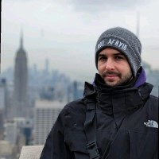
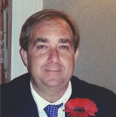

De la báscula mecánica al software y la inteligencia artificial. Un siglo de experiencia familiar puesto al servicio de la industria.

Dastions nace de una larga tradición familiar en el pesaje industrial, con la vocación de llevar el sector a la era digital.
Cuatro generaciones de conocimiento del terreno, ahora convertidas en software, IoT e inteligencia artificial para fabricantes, instaladores y clientes de todo el mundo.
Antonio Collado González inicia su carrera en AVERY, empresa inglesa líder en pesaje industrial. La primera generación de una larga trayectoria familiar.
Nace la empresa familiar, con colaboraciones con marcas reconocidas como MOBBA, EPELSA, PIBERNAT y METTLER TOLEDO. Consolidación y diversificación de servicios de la mano de German Mauri.
Oriol Mauri lidera la cuarta generación con un enfoque en IoT, software e innovación tecnológica: Dastions, la evolución digital del pesaje.



Conoce cómo trabajamos y cómo conectamos la industria. Reproduce nuestros vídeos.
Digitalizamos el pesaje y conectamos las máquinas de control de calidad de J O Sims Ltd en Reino Unido.
Un cliente implanta Data Collection DTM 4.0 para el control y la recogida de datos de su planta de producción.
Conectamos todos los equipos de pesaje y logística de Portsur en el Puerto de Castellón.

CEO & Fundador
Cuarta generación liderando la transformación digital del pesaje industrial.

Director Técnico
Experiencia en ingeniería y desarrollo de soluciones a medida.

Especialista en Pesaje
Relaciones internacionales y partners tecnológicos.
Te acompañamos en todo momento, realizando la integración y las gestiones necesarias para poner en marcha tu solución.
Adaptamos cada proyecto a las necesidades específicas de tu planta, tu operativa y tus equipos.
Soporte técnico incluido y mejora continua para una amortización rápida y un ahorro real.
"Impulsar la evolución del pesaje hacia la era digital mediante soluciones de software innovadoras e integradoras. Ser el socio estratégico que aporta valor a fabricantes e instaladores, liderando la digitalización del pesaje."
Un siglo de conocimiento del pesaje, ahora en software. Hablemos de tu proyecto.
Contáctanos →